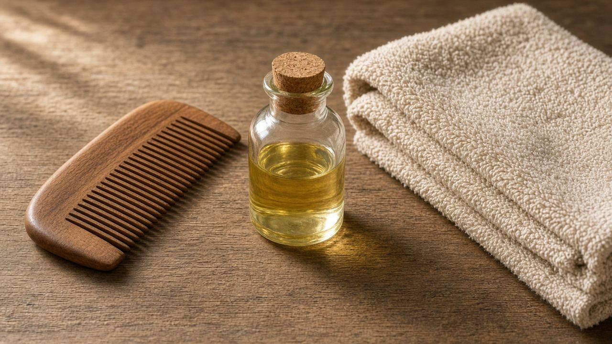

شعر
الشعر والفروة: اغسل على قد فروتك مش على قد الإعلان
ده روتين يومي، مش كشف. لو بشرتك فيها طفح أو حساسية أو حَب تحت الجلد، روح لطبيب جلدية.

الفروة الدهنية ممكن تحتاج غسيل كل يوم أو يوم ويوم بشامبو لطيف. الفروة الجافة بتتقشر وبتشد لو اتغسلت يوميًا بشامبو قاسي. مفيش عدد سحري ينفع الكل. المعيار: فروة مش بتلحس من الدهون، ومش بتتقشر من الجفاف، وشعر تقدر تمشّطه من غير ما يتكسر.
حط الشامبو على الفروة وفرك بلطف بالأطراف، مش بالأظافر. الأطراف الناشفة متغسلهاش بنفس قوة الجذور؛ البلسم للأطراف، ومش طبقة تقيلة على الفروة الدهنية. الميّة السخنة بتزوّد الجفاف. الشطف الأخير بميّة أهدى.
الحرارة — السيراميك والمكواة — بتضعف الشعرة مع التكرار. لو بتستخدمها، حرارة أقل وواقي حرارة، ومش كل يوم. التساقط الطبيعي عشرات الشعرات في اليوم. الفرق لما تبص في الصرف وتلاقي خصل، أو لما الخط في النص يوسع بسرعة، أو لما الشعر يقع مع الشد الخفيف.
التسريحة المشدودة يوميًا، والذيل العالي الثابت، ووصلات بتشد على الجذور، ممكن تعمل تساقط من الشد. ده بيتوقف لما الشد يقف، ولو استمر الشهور الندبة بتثبت. غيّر مكان الذيل، وفك الضفيرة قبل النوم.
تساقط واضح بعد الولادة، أو مع تعب ونقص حديد، أو مع اضطراب في الغدة، مش بيتعالج بزيت من غير كشف. التحليل والطبيب هما اللي يفرّقوا بين دورة الشعر الطبيعية وبين سبب محتاج علاج. الزيوت على الفروة مش بتطوّل شعر ميت؛ هي بتلمع اللي موجود، ولو قفلت المسام عند فروة دهنية بتزوّد القشرة.